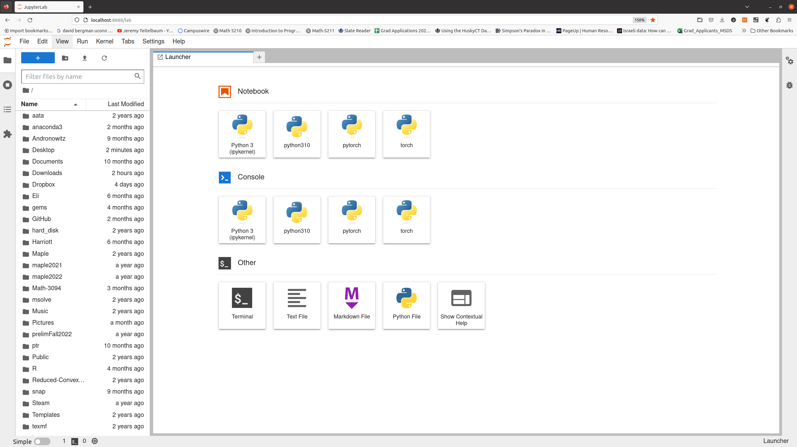
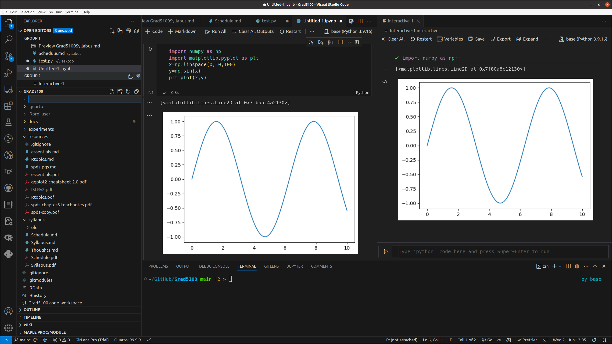

Key Tools for Data Science
Fundamentals of Data Science
Key Software Tools
Anaconda Install for Python
- Download from https://www.anaconda.com
Anaconda includes:
- python
- jupyter: notebook working environment
- python libraries: ML, visualization, I/O and others
- conda package manager: for dealing with multiple versions of libraries
- anaconda navigator: a GUI gateway to anaconda tools
- lots of other stuff
Verify Jupyter
- Verify JupyterLab
From a command line
$ jupyter lab or use anaconda navigator to launch jupyterlab.

- Verify python version
From a command line
$ python --versionor inside a jupyter notebook cell:
import sys
print(sys.version)Optional: Jupyter on UConn’s HPC Cluster
R and Rstudio Install for R
R is an open source language for statistical computations.
Rstudio is a working environment for the R language.
R and Rstudio need to be installed separately.
R is available at https://cran.r-project.org
Rstudio is available at https://posit.co/download/rstudio-desktop
Verify R and Rstudio
For R, From a command line:
$ R For Rstudio, use the icon/shortcut or from a command line:
$ rstudio VSCode
- vscode is a very powerful “IDE” (integrated development environment).
- it can integrate jupyter notebooks and r workbooks, though it takes some setting up
- vscode is integrated with GitHub copilot, a version of ChatGPT-3 that helps write code.
- vscode is available at http://code.visualstudio.com for windows, linux, and macOS.
Using vscode
VSCode (visual studio code) is a freely distributed code editor/IDE distributed by microsoft.
It is extremely capable and well-suited for software development in python and other languages.
It is perhaps not as optimized for R as Rstudio but it does work.
You can access github copilot a version of chatGPT optimized for code, inside vscode in a straightforward way.
Installing vscode
The software is available here.
You need a github account to use github copilot, and you need to sign in to that account from inside vscode. GitHub copilot is free to students, but you need to sign up for the student developer pack..

Overview of vscode
- Opening folders (as projects)
- Opening files
- Install Extensions:
- python
- R
- many others
- The command palette
More on vscode
- jupyter notebooks inside vscode with github copilot
- Interactive python with code cells (# %%)
- The terminal
Setting up a Project
- Create a project directory
- Subdirectories
- data for data files
- docs for notes and documentation
- others?
- Create a README.md file
Tools
For the directories:
- the finder or File Manager
- the command line
For the README file:
- a text editor such as
nanoor notepad - jupyter or Rstudio (as we will see soon)
- vscode